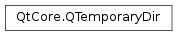

QTemporaryDir¶
Synopsis¶
Functions¶
- def
autoRemove() - def
errorString() - def
filePath(fileName) - def
isValid() - def
path() - def
remove() - def
setAutoRemove(b)
Detailed Description¶
The
PySide2.QtCore.QTemporaryDirclass creates a unique directory for temporary use.
PySide2.QtCore.QTemporaryDiris used to create unique temporary directories safely. The directory itself is created by the constructor. The name of the temporary directory is guaranteed to be unique (i.e., you are guaranteed to not overwrite an existing directory), and the directory will subsequently be removed upon destruction of thePySide2.QtCore.QTemporaryDirobject. The directory name is either auto-generated, or created based on a template, which is passed toPySide2.QtCore.QTemporaryDir‘s constructor.Example:
// Within a function/method... QTemporaryDir dir; if (dir.isValid()) { // dir.path() returns the unique directory path } // The QTemporaryDir destructor removes the temporary directory // as it goes out of scope.It is very important to test that the temporary directory could be created, using
PySide2.QtCore.QTemporaryDir.isValid(). Do not usePySide2.QtCore.QDir.exists(), since a default-constructedPySide2.QtCore.QDirrepresents the current directory, which exists.The path to the temporary directory can be found by calling
PySide2.QtCore.QTemporaryDir.path().A temporary directory will have some static part of the name and some part that is calculated to be unique. The default path will be determined from
QCoreApplication.applicationName()(otherwiseqt_temp) and will be placed into the temporary path as returned byQDir.tempPath(). If you specify your own path, a relative path will not be placed in the temporary directory by default, but be relative to the current working directory. In all cases, a random string will be appended to the path in order to make it unique.
-
class
PySide2.QtCore.QTemporaryDir¶ -
class
PySide2.QtCore.QTemporaryDir(templateName) Parameters: templateName – unicode Constructs a
PySide2.QtCore.QTemporaryDirusing as template the application name returned byQCoreApplication.applicationName()(otherwiseqt_temp). The directory is stored in the system’s temporary directory,QDir.tempPath().See also
Constructs a
PySide2.QtCore.QTemporaryDirwith a template oftemplatePath.If
templatePathis a relative path, the path will be relative to the current working directory. You can useQDir.tempPath()to constructtemplatePathif you want use the system’s temporary directory.If the
templatePathends with XXXXXX it will be used as the dynamic portion of the directory name, otherwise it will be appended. UnlikePySide2.QtCore.QTemporaryFile, XXXXXX in the middle of the template string is not supported.See also
-
PySide2.QtCore.QTemporaryDir.autoRemove()¶ Return type: PySide2.QtCore.boolReturns
trueif thePySide2.QtCore.QTemporaryDiris in auto remove mode. Auto-remove mode will automatically delete the directory from disk upon destruction. This makes it very easy to create yourPySide2.QtCore.QTemporaryDirobject on the stack, fill it with files, do something with the files, and finally on function return it will automatically clean up after itself.Auto-remove is on by default.
-
PySide2.QtCore.QTemporaryDir.errorString()¶ Return type: unicode If
PySide2.QtCore.QTemporaryDir.isValid()returnsfalse, this function returns the error string that explains why the creation of the temporary directory failed. Otherwise, this function return an empty string.
-
PySide2.QtCore.QTemporaryDir.filePath(fileName)¶ Parameters: fileName – unicode Return type: unicode Returns the path name of a file in the temporary directory. Does not check if the file actually exists in the directory. Redundant multiple separators or “.” and “..” directories in
fileNameare not removed (seeQDir.cleanPath()). Absolute paths are not allowed.
-
PySide2.QtCore.QTemporaryDir.isValid()¶ Return type: PySide2.QtCore.boolReturns
trueif thePySide2.QtCore.QTemporaryDirwas created successfully.
-
PySide2.QtCore.QTemporaryDir.path()¶ Return type: unicode Returns the path to the temporary directory. Empty if the
PySide2.QtCore.QTemporaryDircould not be created.
-
PySide2.QtCore.QTemporaryDir.remove()¶ Return type: PySide2.QtCore.boolRemoves the temporary directory, including all its contents.
Returns
trueif removing was successful.
-
PySide2.QtCore.QTemporaryDir.setAutoRemove(b)¶ Parameters: b – PySide2.QtCore.boolSets the
PySide2.QtCore.QTemporaryDirinto auto-remove mode ifbis true.Auto-remove is on by default.
© 2018 The Qt Company Ltd. Documentation contributions included herein are the copyrights of their respective owners. The documentation provided herein is licensed under the terms of the GNU Free Documentation License version 1.3 as published by the Free Software Foundation. Qt and respective logos are trademarks of The Qt Company Ltd. in Finland and/or other countries worldwide. All other trademarks are property of their respective owners.